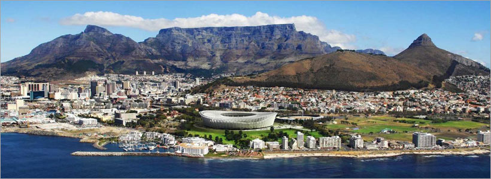

Cape care routes
Cape care routes -is city of Cape Town’s design and the Cape care routes that allows one to visit projects that have an enviromental conservation.A person should care about Cape care routes, because the routes gives our visitors and locals in Cape Town a chance and an opportunity to see how people live, how they grow their own food, how they build their own homes, and how they make crafts and the beauty of Cape Town.